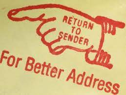

Address Validation on UAA:
An Overlooked Issue
ShipEngine’s API has many wonderful features our users and developers interact with every day, from creating custom shipping labels to getting and printing postage directly from home. However, one aspect of shipping and our API is often overlooked: a wrong address.
Imagine it: your marketing and ad campaign worked, the customer located and purchased your product, your shipping was sent out… but then the product comes back to days later. Now, you have an upset potential buyer, potentially lost revenue, and definitely increased shipping costs. What happened? You, and your customer, have been a victim of a bad address.
You are not alone either. Undeliverable as addressed (UAA) mail is a major problem here in the United States. According to the USPS Inspector General, a July 2015 report estimated that UAA mail cost the mailing industry 20 billion in the year 2014.
This can be caused by simple things like the consumer not entering proper information to more complicated issues like addresses not registering correctly in the wide variety of different shipping carriers and their varied programs.
Thankfully, Stamps.com through ShipEngine is here to help and has anticipated this need. With a simple API call, your developers can access our ShipEngine API to check whether or not an address is valid or not. Our API is even equipped to handle more nuanced but common issues, like a consumer forgetting to add his/her apartment number to their address.
To address issues with shipping programs, our API can also handle different requests and configurations from USPS, UPS, and FedEx systems as well. This ensures that your product, however you ship, and with whomever your ship it with, is addressed correctly through that proper carrier.
As always, ShipEngine is here to answer your questions or concerns. In regards to this particular issue, look over our API Address Validation documentation located in our ShipEngine API documentationhere.
If you have any additional questions, feel free to email us at email@shipengine.com
Thank you!